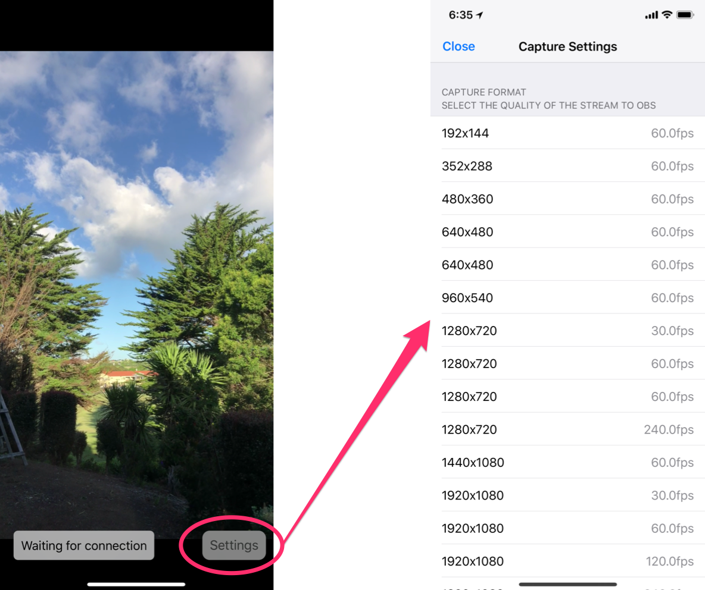

Using the OBS iOS Camera plugin is easy. Once you have the plugin installed and the iOS app installed:
Plugging in your iOS device with the app running automatically connects to OBS Studio.
You can select the video resolution that your iPhone sends to OBS by tapping on the settings button.
Be careful though, higher resolutions and framerates can cause undesirable lag. I'd recommend streaming using either 720p@60 or 1080p@30. Future updates will allow you to configure the bitrate to allow streaming of higher resolutions and framerates if people desire this feature.

If OBS crashes after adding the iPhone Camera source to your scene, try again and make sure to follow the instructions at the top of this page. I've experienced this issue and it always works the second time - I know this isn't good enough, and I'm looking into the cause of this issue.
Make sure you've installed iTunes. On Windows iTunes provides the service to communicate to your iOS device over USB. iTunes doesn't need to be running, it needs to have been installed and ran once.
v1.1.1 - Add installation instructions for Windows - Add message about higher resolutions and framerates - Set keyframe duration to every 10 frames to improve sync v1.1.0 - Add new icon - Add link to the OBS Plugin in the settings screen - Add ability to see which resolution is currently selected in the settings screen - Fix issue where rotating your device in the settings screen, and then closing the settings screen would result in the video preview being laid out incorrectly - Fix issue where the video would playback in super speed after closing settings after a minute or two - Improve the appearance of the settings button v1.0 - Initial Release